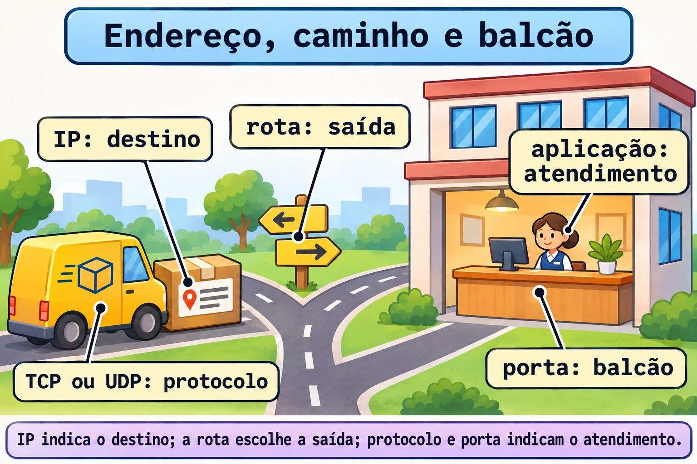
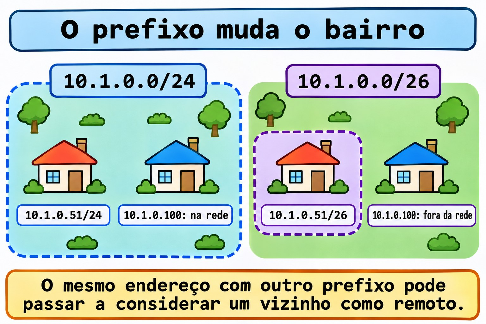
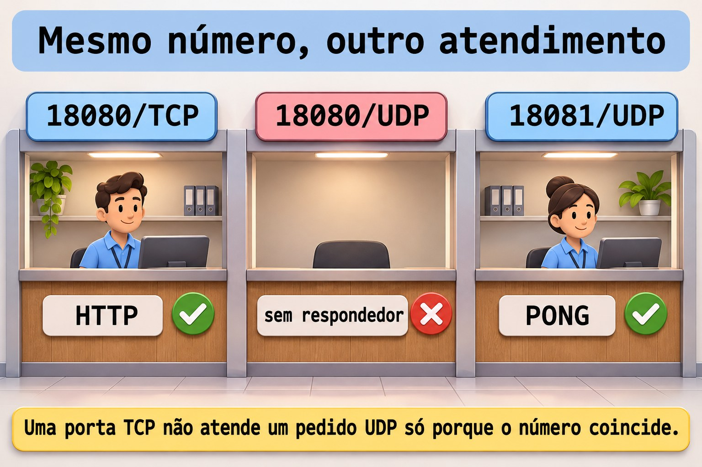

Aula 11.1 · TCP/IP para quem administra
No Windows Server, você separa endereço, máscara, gateway e porta antes de culpar o serviço. No Linux, o raciocínio continua. Na Aula 2.4 você usou ferramentas de rede; agora vai explicar o que elas mostram. Você vai ler IPv4 e IPv6, calcular um prefixo e distinguir ICMP, TCP e UDP com testes nas duas VMs. Configuração persistente fica para as Aulas 11.2 e 11.3.
Núcleo desta aula: endereço identifica uma interface; prefixo descreve uma rede; a tabela de rotas escolhe o caminho; protocolo e porta identificam o atendimento. Um
pingque responde não confirma um serviço. O resto é aprofundamento.
| Ficha | |
|---|---|
| Módulo | M11 · Rede, aula 1 de 5 |
| Quando | Semana 16 |
| Ao final | Você explica o caminho escolhido para um destino e comprova endereço, família, protocolo e porta de um serviço |
| Pré-requisitos | Aulas 2.4, 2.5, 3.1 e 10.4; SSH por chave e sudo nas duas VMs |
| Tempo | Cerca de 90 minutos, mais 30 minutos para repetir sem consultar |
| Snapshots | m11a1-inicio e m11a1-fim nas VMs 201 e 202 |
1 · Aquecimento
Responda sem consultar. O gabarito fica no fim.
- Qual comando mostra os endereços das interfaces sem mudar a configuração?
- Um processo atende só em
127.0.0.1. Outra máquina alcança esse atendimento pelo IP da VM? - Para descobrir quem abriu uma porta, basta saber que o serviço está ativo no
systemd?
2 · Por que importa
O chamado diz: "O servidor responde ao ping, mas a aplicação não abre". Uma pessoa troca o gateway. Outra reinicia o serviço. A terceira abre portas ao acaso. Você começa por quatro dados: destino, família de endereço, protocolo e porta.
| Evidência | O que permite afirmar | O que ainda falta |
|---|---|---|
ping recebe respostas | Houve resposta ICMP daquele destino | A aplicação pode continuar parada |
ss mostra um socket TCP em LISTEN | Existe atendimento local naquele endereço e porta | O caminho remoto e a aplicação podem falhar |
| Uma conexão TCP completa | O estabelecimento TCP funcionou nesse teste | Autenticação e operação da aplicação ainda podem falhar |
| A aplicação responde ao pedido esperado | A operação testada funcionou | Outras operações podem ter outro resultado |
O objetivo é reduzir a dúvida com um teste por vez. Não troque uma configuração que a evidência ainda não apontou.
3 · Modelo mental
Pense na entrega de uma encomenda a um prédio. O endereço IP indica onde entregar. A rota escolhe a saída. A porta identifica o balcão do serviço. O protocolo define como a conversa acontece. O prefixo ajuda a descrever quais endereços pertencem à mesma rede.
aplicação → protocolo + porta → IP de destino → consulta às rotas
|
saída direta ou próximo roteador
destino local: outro processo na própria máquina
destino no enlace: entrega ao vizinho
destino por gateway: entrega ao próximo roteadorA metáfora termina aí: uma porta TCP é um número de atendimento, não uma porta física da placa. Na Ethernet, a entrega ao próximo salto usa um quadro e um endereço MAC. IPv4 normalmente descobre o MAC do vizinho com ARP; IPv6 usa Neighbor Discovery. Você não precisa decorar esses pacotes hoje. Precisa separar próximo salto e destino final.


Ponte Windows
| Windows Server | Linux | O que comparar |
|---|---|---|
Get-NetIPAddress | ip -br address | Endereço e prefixo por interface |
Get-NetRoute | ip route e ip -6 route | Rotas IPv4 e IPv6, separadamente |
Get-NetTCPConnection | ss -tn e ss -ltn | Conexões e atendimentos TCP |
Get-NetUDPEndpoint | ss -uan | Sockets UDP; não há o estabelecimento do TCP |
Test-NetConnection -Port | Cliente do protocolo, como curl para HTTP | Conectar à porta é diferente de concluir a operação |
ping -4 e ping -6 | ping -4 e ping -6 | Escolher a família explicitamente |
4 · O essencial
IPv4: endereço e prefixo são duas informações
Um IPv4 tem 32 bits. O /24 informa quantos bits formam o prefixo. No exemplo didático 10.1.0.51/24, os primeiros 24 bits identificam 10.1.0.0/24. Isso equivale à máscara 255.255.255.0. O endereço continua sendo 10.1.0.51.
| Exemplo | Rede | Intervalo da sub-rede |
|---|---|---|
10.1.0.51/24 | 10.1.0.0/24 | 10.1.0.0 a 10.1.0.255 |
10.1.0.51/26 | 10.1.0.0/26 | 10.1.0.0 a 10.1.0.63 |
10.1.0.100/26 | 10.1.0.64/26 | 10.1.0.64 a 10.1.0.127 |
No /26 tradicional, .0 é a rede e .63 é o broadcast da primeira sub-rede. Restam 62 endereços usuais de host. A conta é diferente para /31 e /32, usados em situações específicas. As VMs usam .51 e .52, mas o prefixo real deve ser lido nelas. Não presuma /24 só pelo endereço.


A rota escolhe o próximo salto
No roteamento comum deste lab, o kernel compara o destino com a tabela e prefere a rota de prefixo mais específico. Rotas com o mesmo prefixo são diferenciadas pela preferência e pela métrica. O endereço com prefixo cria normalmente uma rota conectada. Uma rota mais específica muda o próximo salto escolhido. Por isso, calcule a sub-rede e depois confira a decisão real com ip route get.
ip -4 route
ip -6 route
ip -4 route get 192.0.2.1O último comando consulta a decisão local; não envia um pacote ao destino. Leia dev como interface de saída e src como origem escolhida. Quando houver via, ele indica o próximo roteador. Sem uma rota aplicável, a consulta informa que não há caminho. 192.0.2.1 é apenas um destino de documentação para essa consulta. Não o configure na placa.
Endereço privado não é uma política de acesso
As faixas privadas IPv4 são 10.0.0.0/8, 172.16.0.0/12 e 192.168.0.0/16. Elas não são endereços públicos globais. Isso não impede que outra máquina da rede alcance um serviço. NAT, quando usado, traduz endereços; firewall decide tráfego segundo regras. São tarefas diferentes.
IPv6: outro formato, a mesma necessidade de conferir o caminho
IPv6 tem 128 bits e usa grupos hexadecimais. Zeros iniciais podem ser omitidos. Uma sequência de grupos zerados pode ser comprimida com ::, uma vez no endereço. 2001:db8:11::51/64 é um exemplo de documentação, não um endereço para instalar no lab.
| Endereço ou prefixo | Significado prático |
|---|---|
::1 | Loopback IPv6, a própria máquina |
fe80::/10 | Endereços link-local; o alcance é o enlace |
fc00::/7 | Faixa de endereços locais únicos, ULA |
:: em um bind de servidor | Endereço não especificado, usado para atender em endereços locais IPv6 |
/64 | Comprimento de sub-rede comum em redes IPv6; não é uma regra para todo tipo de enlace |
Um endereço link-local pode exigir a indicação da interface, como %enp6s18, porque o mesmo escopo existe em enlaces diferentes. Ter IPv6 link-local não demonstra que existe rota IPv6 para a internet. Confira IPv4 e IPv6 separadamente: um bind em :: não comprova atendimento IPv4.
Porta, protocolo e endereço de escuta
Um número de porta tem 16 bits. TCP e UDP mantêm espaços de portas distintos. 18080/TCP e 18080/UDP não são o mesmo atendimento. O cliente normalmente usa uma porta temporária. O servidor costuma manter uma porta conhecida. Uma conexão TCP é distinguida pelos endereços e pelas portas de origem e destino, dentro do protocolo.
| Escuta | Quem pode tentar alcançar |
|---|---|
127.0.0.1:18080 | Processos da própria máquina por IPv4 |
[::1]:18080 | Processos da própria máquina por IPv6 |
0.0.0.0:18080 | Endereços locais IPv4; o acesso externo ainda depende do caminho e das políticas |
[::]:18080 | Endereços locais IPv6; confira separadamente o comportamento IPv4 |
0.0.0.0 é útil para explicar o bind, mas não é o endereço que você entrega ao cliente remoto. No lab, o serviço ficará no loopback. Você não vai publicar uma porta na rede compartilhada.
TCP, UDP e ICMP respondem perguntas diferentes
| Protocolo | O que oferece | O que não promete |
|---|---|---|
| TCP | Fluxo de bytes ordenado, com estabelecimento e mecanismos de retransmissão | Que a aplicação concluiu a operação; criptografia automática |
| UDP | Datagramas, sem estabelecimento obrigatório nem garantia própria de entrega ou ordem | Que um envio aceito pelo sistema chegou ao servidor |
| ICMP e ICMPv6 | Controle, mensagens de erro e testes como Echo | Que uma porta TCP ou UDP atende |
O estabelecimento TCP começa com SYN, SYN-ACK e ACK no caso usual. Um reconhecimento TCP não confirma que a aplicação gravou um arquivo ou aceitou um login. UDP não significa aplicação sem confiabilidade: a aplicação pode implementar confirmações e retransmissões. ICMP não usa portas TCP/UDP. Bloquear todo ICMPv6 também pode quebrar funções básicas do IPv6.

Rocky × Debian
| Item | Rocky 9, VM 201 | Debian 13, VM 202 |
|---|---|---|
| Acesso do curso | ssh rocky-lab, IP 10.1.0.51 | ssh debian-lab, IP 10.1.0.52 |
Pacote de ip e ss | iproute | iproute2 |
Pacote de ping | iputils | iputils-ping |
| Ferramentas do teste local | python3 e curl | python3 e curl |
| Gerência persistente | NetworkManager, Aula 11.2 | Confira o gerenciador instalado; Aula 11.3 |
| Nome da placa | Confira com ip -br link; costuma ser enp6s18 | Confira do mesmo modo; não copie o nome às cegas |
ip e ss neste lab | Mesma sintaxe | Mesma sintaxe |
5 · Lab guiado
Faça a sequência inteira primeiro na rocky-lab e depois na debian-lab, como student. Abra três sessões para a VM em teste: A para o servidor TCP, B para os clientes e C para o servidor UDP. Não misture a janela A de uma VM com a B da outra: loopback sempre aponta para a máquina onde você está.
Antes de qualquer alteração futura de IP: use o console noVNC do Proxmox ou um plano de volta testado. Trocar o endereço usado pelo SSH pode derrubar a sessão. Hoje você só lê a placa real e cria serviços locais temporários. Não altere firewall, SELinux, gateway ou DHCP. Não crie um servidor DHCP na vmbr0.
Passo 0 · Guardar o ponto de volta. No console do nó Proxmox que hospeda cada VM:
Palpite: estes comandos guardam também a memória da VM ligada, ou apenas discos e configuração?
qm snapshot 201 m11a1-inicio
qm snapshot 202 m11a1-inicio
qm listsnapshot 201
qm listsnapshot 202Saída esperada: a criação termina sem erro e a lista contém m11a1-inicio. Sem --vmstate, estes comandos não guardam a memória da VM ligada.
Verifique: se qualquer snapshot falhar, pare e resolva isso antes do lab. Não rode qm dentro das VMs.
Passo 1 · Preparar as ferramentas. Entre pela chave com ssh rocky-lab ou ssh debian-lab.
Palpite: mudar o nome do pacote entre as distros muda também a função de ip e ss?
# Rocky 9 only
sudo dnf install -y iproute iputils python3 curl
# Debian 13 only
sudo apt update
sudo apt install -y iproute2 iputils-ping python3 curlSaída esperada: instalação concluída ou pacotes já presentes. Execute só as linhas da sua distro.
Verifique: command -v ip ss ping python3 curl deve localizar os cinco programas; id -un deve mostrar student. Essas instalações precisam de repositórios acessíveis. Se falharem, registre a mensagem e não avance sem as ferramentas.
Passo 2 · Fazer o inventário de endereço e rota. Na janela B:
Palpite: qual é o endereço da VM, seu prefixo e a interface de saída?
hostname
ip -br link
ip -br address
ip -4 route
ip -6 route
ip -4 route get 192.0.2.1Saída esperada: seu hostname, interfaces e rotas reais. A consulta final mostra uma rota aplicável ou informa que não há caminho.
Verifique: registre endereço, prefixo, interface, próximo salto e origem escolhida, sem preencher dados por suposição. Na Rocky, consulte também ip -4 route get 10.1.0.52; no Debian, ip -4 route get 10.1.0.51. Compare a saída direta com uma saída que usa via, se existir.
Passo 3 · Calcular sem mudar a placa. Ainda na janela B:
Palpite: 10.1.0.52 pertence à rede de 10.1.0.51/26? E 10.1.0.100?
python3 - <<'PY'
import ipaddress
net = ipaddress.ip_network('10.1.0.51/26', strict=False)
print(net, net.netmask, net.broadcast_address)
for value in ('10.1.0.52', '10.1.0.100'):
print(value, ipaddress.ip_address(value) in net)
PYSaída esperada: 10.1.0.0/26 255.255.255.192 10.1.0.63, depois .52 com True e .100 com False.
Verifique: faça a conta em blocos de 64 endereços e compare. Esse programa calcula exemplos; não configura nenhum endereço.
Passo 4 · Separar loopback e ICMP. Na janela B:
Palpite: o teste precisa da placa virtual, do gateway ou da internet?
ip -4 address show dev lo
ip -6 address show dev lo
ping -4 -c 2 -W 2 127.0.0.1
ping -6 -c 2 -W 2 ::1Saída esperada: os endereços de loopback e respostas locais. Tempos e identificadores variam; não compare números com uma captura pronta.
Verifique: explique por que isso não comprova a saída da VM. Se ::1 não existir ou IPv6 estiver indisponível, registre essa condição e pule o Passo 7 e a Quebra 2; não mude sysctl para esconder a diferença.
Passo 5 · Abrir um atendimento TCP restrito. Na janela B, confira antes as portas usadas pelo lab e pelas quebras:
Palpite: um serviço ligado a 127.0.0.1 vai aparecer em 0.0.0.0?
ss -ltn 'sport = :18080'
ss -ltn 'sport = :18082'
ss -lun 'sport = :18080'
ss -lun 'sport = :18081'
mkdir -m 0700 "$HOME/m11a1" && printf 'TCP ok\n' > "$HOME/m11a1/index.html"Saída esperada: só o cabeçalho dos filtros, pasta criada e arquivo gravado. Se houver uma linha de socket ou a pasta já existir, pare e investigue antes de usar esses recursos.
Verifique: cat "$HOME/m11a1/index.html" mostra TCP ok. Na janela A da mesma VM, deixe o comando abaixo em primeiro plano:
python3 -m http.server 18080 --bind 127.0.0.1 --directory "$HOME/m11a1"Saída esperada: algo como Serving HTTP on 127.0.0.1 port 18080. Se houver Address already in use, não mate o processo desconhecido.
Verifique: na B, ss -ltnp 'sport = :18080' deve mostrar LISTEN em 127.0.0.1:18080 e o processo, quando visível. A janela A fica ocupada pelo servidor; não digite o cliente nela.
Passo 6 · Pedir e receber pela aplicação. Na janela B:
Palpite: qual protocolo, endereço e porta o cliente vai usar? Qual texto deve receber?
curl --noproxy '*' --connect-timeout 2 --max-time 4 -fsS http://127.0.0.1:18080/
echo $?
ss -tn state establishedSaída esperada: TCP ok e código 0. A conexão HTTP pode já ter terminado quando você roda ss; não precisa aparecer em ESTAB.
Verifique: a janela A registra o pedido. --noproxy '*' evita que um proxy do ambiente desvie esse teste local. Você comprovou uma resposta HTTP, além do atendimento TCP.
Passo 7 · Repetir por IPv6. Só se ::1 funcionou. Na janela A, pressione Ctrl+C para encerrar o servidor IPv4.
Palpite: mudar o endereço do bind altera o prefixo ou o gateway da placa real?
python3 -m http.server 18080 --bind ::1 --directory "$HOME/m11a1"Saída esperada: o servidor atende em ::1. Na janela B:
ss -6 -ltn 'sport = :18080'
curl --noproxy '*' --connect-timeout 2 --max-time 4 -gfsS 'http://[::1]:18080/'Verifique: o socket IPv6 e o texto TCP ok. Os colchetes separam o endereço IPv6 da porta na URL. Depois, na A, encerre com Ctrl+C e rode novamente o comando do Passo 5, com --bind 127.0.0.1; confirme o bind na B antes de continuar.
Passo 8 · Fazer uma pergunta UDP de verdade. Na janela B, crie um pequeno respondedor de laboratório:
Palpite: um envio UDP bem-sucedido basta para afirmar que houve resposta?
cat > "$HOME/m11a1/udp_echo.py" <<'PY'
import socket
with socket.socket(socket.AF_INET, socket.SOCK_DGRAM) as server:
server.bind(('127.0.0.1', 18081))
print('UDP ready', flush=True)
while True:
data, peer = server.recvfrom(1024)
if data == b'PING':
server.sendto(b'PONG', peer)
PYSaída esperada: nenhuma mensagem ao gravar o arquivo. Na janela C, execute python3 "$HOME/m11a1/udp_echo.py"; deve aparecer UDP ready. Deixe esse processo em primeiro plano.
Verifique: na B, ss -lunp 'sport = :18081' mostra o socket UDP local, normalmente em UNCONN, sem o LISTEN do TCP. Então rode:
python3 - <<'PY'
import socket
with socket.socket(socket.AF_INET, socket.SOCK_DGRAM) as client:
client.settimeout(2)
client.sendto(b'PING', ('127.0.0.1', 18081))
print(client.recvfrom(1024)[0].decode())
PYSaída esperada: PONG.
Verifique: você esperou uma resposta da aplicação; o programa não declarou sucesso só por enviar. O código serve apenas como ferramenta local; a aula não exige aprender Python.
Decida 1
O ping responde, mas a aplicação não abre. Qual próximo teste traz evidência útil?
A) Trocar o gateway. B) Conferir endereço, protocolo e porta com ss e um cliente da aplicação. C) Desligar o firewall.
| Se você marcou | Resultado | Por quê |
|---|---|---|
| A | Sem justificativa | O ping não apontou um erro no gateway |
| B | Certo | Você confere o atendimento e testa a operação |
| C | Perigoso | Você muda a política antes de localizar a falha |
Decida 2
O serviço está em 127.0.0.1:18080. Você quer acessá-lo de outra máquina. O que explica a falha inicial?
A) O bind é local à própria VM. B) Falta liberar ICMP. C) Toda porta acima de 1024 só funciona localmente.
| Se você marcou | Resultado | Por quê |
|---|---|---|
| A | Certo | Loopback não publica o serviço na placa da VM |
| B | Incorreto | Resposta ICMP não muda o endereço de escuta TCP |
| C | Incorreto | A restrição deste teste vem do bind, não desse intervalo de portas |
6 · Quebre e conserte
Faça as três quebras nas duas VMs. Mantenha A atendendo em 127.0.0.1:18080 por TCP e C em 127.0.0.1:18081 por UDP. Cada erro abaixo está no pedido do cliente, sem derrubar sua conexão SSH.
Quebra 1 · O número da porta está errado
Palpite: o ping vai mudar quando você errar a porta do HTTP?
ping -4 -c 1 -W 2 127.0.0.1
curl --noproxy '*' --connect-timeout 2 --max-time 4 -fsS http://127.0.0.1:18082/
echo $?
ss -ltn 'sport = :18080'
ss -ltn 'sport = :18082'Sintoma: o ping responde, mas o pedido HTTP à porta 18082 falha com código 7. A mensagem do curl informa que não conseguiu conectar.
Investigação: compare as duas consultas de ss: há um atendimento em 18080 e nenhum em 18082.
Causa: o cliente pediu a porta errada. O ICMP do ping não verifica portas TCP.
Conserto: repita o curl do Passo 6, com 18080.
Verifique: TCP ok e código 0.
Prevenção: registre destino, protocolo e porta junto com a configuração da aplicação. Não aceite "o servidor responde" como diagnóstico completo.
Quebra 2 · A família está errada
Palpite: a presença de ::1 obriga um servidor ligado a 127.0.0.1 a responder em IPv6?
curl --noproxy '*' --connect-timeout 2 --max-time 4 -gfsS 'http://[::1]:18080/'
ss -4 -ltn 'sport = :18080'
ss -6 -ltn 'sport = :18080'Sintoma: o pedido IPv6 falha. Execute esta quebra com o servidor restaurado para IPv4 após o Passo 7.
Investigação: a consulta ss -4 mostra o atendimento; a consulta ss -6 não mostra nenhum.
Causa: o cliente pediu ::1, mas o processo atende em 127.0.0.1. São famílias diferentes.
Conserto: use a URL IPv4 do Passo 6.
Verifique: a resposta volta sem alterar rota ou firewall.
Prevenção: teste IPv4 e IPv6 separadamente quando ambos fizerem parte do requisito. Se IPv6 estava indisponível no Passo 4, registre essa condição em vez de executar esta quebra.
Quebra 3 · O número coincide, o protocolo não
Palpite: o servidor HTTP responde a um datagrama UDP só porque a porta é 18080?
python3 - <<'PY'
import socket
with socket.socket(socket.AF_INET, socket.SOCK_DGRAM) as client:
client.settimeout(2)
client.connect(('127.0.0.1', 18080))
client.send(b'PING')
try:
print(client.recv(1024).decode())
except OSError as error:
print(type(error).__name__)
PY
ss -ltn 'sport = :18080'
ss -lun 'sport = :18080'
ss -lun 'sport = :18081'Sintoma: o cliente imprime ConnectionRefusedError. Sem ouvinte UDP em 127.0.0.1:18080, o kernel devolve ICMP de porta inalcançável; não há PONG.
Investigação: ss mostra TCP em 18080, nenhum UDP em 18080 e UDP em 18081.
Causa: o cliente enviou um datagrama ao número usado pelo HTTP/TCP. O connect do socket UDP só define o destino; não faz o estabelecimento do TCP.
Conserto: repita o cliente UDP do Passo 8, direcionado a 18081.
Verifique: PONG comprova a resposta do respondedor.
Prevenção: escreva 18080/TCP ou 18081/UDP, nunca apenas "porta aberta".


Limpeza
Palpite: encerrar os dois processos apaga os endereços da placa da VM?
Na janela A e na C, pressione Ctrl+C. Não use um kill por nome que possa encerrar outro serviço. Na janela B, confira e apague apenas os arquivos que esta aula criou:
ss -ltn 'sport = :18080'
ss -lun 'sport = :18081'
rm -- "$HOME/m11a1/index.html" "$HOME/m11a1/udp_echo.py"
rmdir -- "$HOME/m11a1"
ip -br addressSaída esperada: nenhum atendimento nas portas do lab; arquivos e pasta removidos.
Verifique: os endereços reais continuam iguais ao inventário. Se rmdir recusar por haver outro arquivo, inspecione a pasta; não apague recursivamente.
7 · Armadilhas
| Erro comum | O que fazer | Por quê |
|---|---|---|
Chamar /24 de parte do endereço do host | Separar endereço e prefixo | O prefixo descreve a rede |
| Deduzir o prefixo pelos três primeiros números | Ler a configuração real | A sub-rede pode ser /26, /23 ou outra |
| Usar ping como teste de aplicação | Fazer um pedido do protocolo esperado | ICMP não verifica uma porta TCP/UDP |
Chamar UNCONN de falha no UDP | Ler protocolo e bind | Não existe o estabelecimento obrigatório do TCP |
| Declarar a porta livre sem olhar | Consultar ss antes do bind | Outro processo pode ser o dono |
| Testar IPv6 e conferir só IPv4 | Usar ss -4 e ss -6 | Você pode estar olhando outro atendimento |
Usar http.server para publicar dados | Manter só o diretório de teste e o bind local | É uma ferramenta simples de laboratório, não um servidor de produção |
| Trocar IP pela sessão SSH sem volta | Usar noVNC ou um plano testado | A sessão depende do endereço e do caminho que você altera |
8 · Quiz
Responda sem abrir a cola. Justifique cada resposta com uma evidência.
- Qual é a rede de
10.1.0.100/26?10.1.0.51pertence a ela? - O que o
ip route getmostra? Ele envia um pacote ao destino? - Por que
ping 127.0.0.1pode funcionar com a placa virtual desconectada? - O que muda entre
127.0.0.1:18080e[::1]:18080? - Um
sendtoUDP terminou sem erro. Você pode afirmar que a aplicação respondeu? - O HTTP respondeu
TCP ok. O que esse teste comprovou além de existir um socket emLISTEN?
9 · Cola
| Tarefa | Comando |
|---|---|
| Resumir endereços | ip -br address |
| Ver rotas IPv4 | ip -4 route |
| Ver rotas IPv6 | ip -6 route |
| Consultar caminho, sem transmitir | ip -4 route get 192.0.2.1 |
| Ver atendimentos TCP numéricos | ss -ltn |
| Ver sockets UDP locais | ss -lun |
| Filtrar uma porta TCP | ss -ltnp 'sport = :18080' |
| Separar famílias | ss -4 -ltn e ss -6 -ltn |
| Ver conexões TCP | ss -tn state established |
| Testar ICMP local | ping -4 -c 2 127.0.0.1 e ping -6 -c 2 ::1 |
| Ver detalhes da interface real | ip address show dev enp6s18, se esse for o nome observado |
Flashcards: endereço → destino; prefixo → rede; rota → caminho; porta e protocolo → atendimento; loopback → esta máquina; ping → ICMP, não aplicação. Revise em D+1, D+3, D+7 e D+21. Refaça uma quebra sem consultar e explique qual hipótese cada comando elimina.
10 · Checklist e fechamento
- [ ] Leio endereço e prefixo sem confundir as duas informações
- [ ] Calculo os exemplos
/24e/26e confiro no cálculo local - [ ] Distingo destino final, próximo salto e interface de saída
- [ ] Reconheço
127.0.0.1,::1e link-local IPv6 - [ ] Confiro família, endereço, protocolo e porta antes de mudar uma configuração
- [ ] Distingo
LISTEN, envio UDP e resposta da aplicação - [ ] Fiz as três quebras nas duas distros, ou registrei a indisponibilidade de IPv6
- [ ] Encerrei os dois servidores temporários e removi os arquivos do lab
Último exercício: sem consultar, explique por que o ping da Quebra 1 respondeu, o HTTP falhou e o UDP da Quebra 3 não recebeu PONG. Anote um teste que distinguiria cada causa.
Reboot de conferência: a limpeza já deve ter terminado. Em cada VM, rode sudo systemctl reboot; a sessão SSH vai cair. Acompanhe pelo noVNC, reconecte pelo alias e confira ip -br address, ss -ltn 'sport = :18080' e ss -lun 'sport = :18081'. Nenhum serviço do exercício deve voltar sozinho.
Snapshot de fim, no nó Proxmox de cada VM, depois de conferir o retorno:
qm snapshot 201 m11a1-fim
qm snapshot 202 m11a1-fimNa Aula 11.2 você passa da leitura para a configuração persistente com NetworkManager. O Desafio do M11 fica na última aula do módulo.
11 · Na vida real
Missão, só leitura. Em um servidor que você administre ou tenha autorização para observar, rode apenas os comandos abaixo. Não abra servidores de teste, não instale pacotes e não mude configuração nessa missão.
ip -br link
ip -br address
ip -4 route
ip -6 route
ss -ltn
ss -lun- Quais endereços e prefixos existem na interface de serviço?
- Quais atendimentos estão limitados ao loopback e quais usam outros endereços locais?
- Existe rota padrão IPv4? E IPv6? O que a ausência de uma delas permite concluir?
- Escolha um atendimento conhecido e registre família, endereço, protocolo e porta. Você tem evidência do funcionamento da aplicação, ou só do socket?
Não copie saídas com endereços e nomes internos para um serviço externo. Registre apenas o necessário no diário autorizado.
12 · Aprofundar quando quiser
man ip-address: endereços, prefixos e escopos.man ip-route: rotas e consulta comget.man ss: filtros, famílias e estados de sockets.man ping: ICMP e escolha de IPv4 ou IPv6.man udp: datagramas, destino do socket e recusa quando não há ouvinte.- Documentação de
http.server: opções--binde--directory; uso restrito ao lab. - Manual do
curl:--noproxy, limites de tempo e URLs IPv6.
DeepTutor (http://10.1.0.149:3782, KB "Curso Linux Sysadmin"):
!explica endereço, prefixo, rota, protocolo e porta com a metáfora da entrega ao prédio!feynman respondi ao ping, mas o HTTP falhou: critique minha explicação separando ICMP, TCP e aplicação!quiz Aula 11.1, 6 perguntas sobre IPv4, IPv6, prefixos, TCP, UDP e ICMP, uma por vez
Gabarito comentado
Aquecimento
ip -br address. Ele resume a configuração; não troca endereços. Leia também o prefixo, não apenas o IP.- Não por aquele bind.
127.0.0.1é loopback; outra máquina precisa de um atendimento em endereço alcançável e de um caminho permitido. - Não. O estado da unidade não informa sozinho o bind. Consulte
sse associe endereço, protocolo, porta e processo quando disponível.
Quiz
10.1.0.64/26. O intervalo termina em.127;.51está na sub-rede anterior. Isso é cálculo de sub-rede, não uma leitura das rotas instaladas.- Mostra a decisão de roteamento local para o destino, considerando os parâmetros fornecidos. A consulta não transmite um pacote para testar o caminho.
- O destino está na própria máquina. O teste usa loopback, sem precisar sair pela placa ou passar pelo gateway.
- A família e o endereço de destino: IPv4 em um caso, IPv6 no outro. O mesmo número de porta não cria automaticamente um atendimento nas duas famílias.
- Não. O sistema aceitou o envio; isso não confirma entrega, processamento nem resposta. No lab, só o recebimento de
PONGdemonstrou a resposta do respondedor. - Houve uma conexão TCP e uma operação HTTP que devolveu o conteúdo esperado naquele endereço e porta. Isso não demonstra acesso remoto, autenticação de outro serviço ou funcionamento geral da rede.
← Aula 10.4 · sudo de verdade · Índice de aulas · Aula 11.2 · NetworkManager e nmcli →